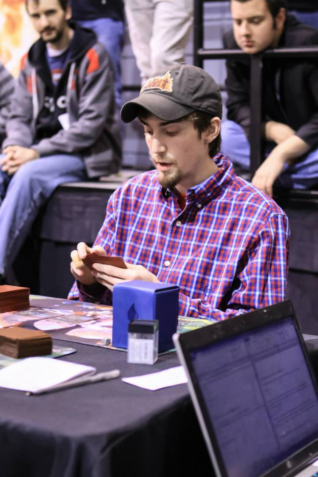

For many years, I've been playing a card game called Magic as a hobby. Best understood as a hybrid of chess and poker, it encourages highly analytical thinking and logic coupled with the mental flexibility needed to adapt new information towards rapid decision-making.
At my deepest level of involvement with the game I travelled the country multiple times a year to compete in the Grand Prix circuit, a series of open tournaments featuring thousands of players and large cash prizes. In 2014, I placed 20th out of a crowd a 4,500, and was covered in a feature match against Brad Nelson, one of the game's top players and a previous player of the year. Check out the write-up here.
